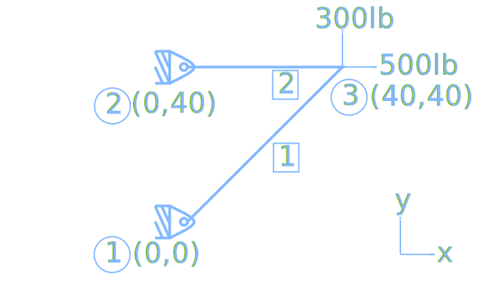
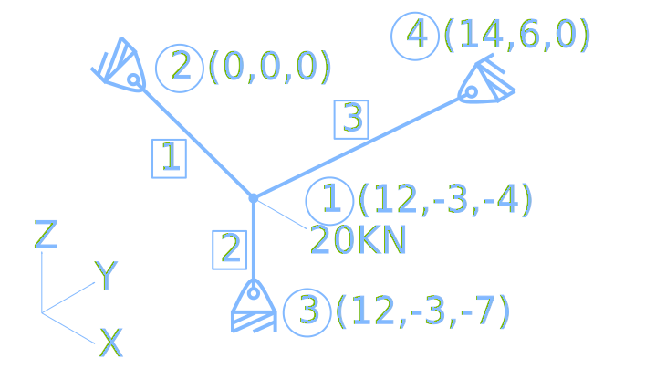

Direct Stiffness Method in Python: Trusses

This post is about some finite element method code that I wrote in 2016. Recently I had to update the scripts to python 3 and I decided to share it.
I won’t write about theory after all there’s a million books out there about this subject. I’m just sharing my take on hands on code, something that you don’t usually find in books. The code is written in python.
At the time I was heavily inspired by Sukhbinder Singh. Go check his blog if you didn’t yet, tons of interesting stuff there. I will also leave a big thanks! for him here, in case he ever happens to read this.
Opening photo by Jacek Dylag on Unsplash.
Let’s start simple with a 2d application of the method. This example is taken from the following book:
Hutton, D. V. (2004). Fundamentals of finite element analysis. 1st ed. Boston: McGraw-Hill. Page 69.
The two-element truss in Figure is subjected to external loading as shown. Using the same node and element numbering as in Figure, determine the displacement components of node 3, the reaction force components at nodes 1 and 2, and the element displacements, stresses, and forces. The elements have modulus of elasticity E1=E2=10x10^6 lb/in^2 and cross-sectional areas A1=A2=1.5 in^2.

##############################################################
# Fem script to compute plane truss displacements and stresses
# written by Eddie Liberato 16/11/16
##############################################################
import numpy as np
# constants
E=10e06
A=1.5
# structure geometry
node_coord=np.array([[0,0],[0,40],[40,40]]) # nodes coordinates
elem_con=np.array([[0,2],[1,2]]) # elements connectivity
x=node_coord[:,0] # sliced array with only x node coordinates
y=node_coord[:,1] # sliced array with only y node coordinates
node_count=len(node_coord)
elem_count=len(elem_con)
struct_dof=2*node_count # (entire) structure degrees of freedom
# matrices initialization
displacement=np.zeros((struct_dof,1))
force=np.zeros((struct_dof,1))
sigma=np.zeros((elem_count,1))
stiffness=np.zeros((struct_dof,struct_dof))
# load assignments
force[4]=500
force[5]=300
# computations
for e in range(elem_count):
index=elem_con[e]
elem_dof=np.array([index[0]*2, index[0]*2+1, index[1]*2, index[1]*2+1])
xl=x[index[1]]-x[index[0]]
yl=y[index[1]]-y[index[0]]
elem_length=np.sqrt(xl*xl+yl*yl)
c=xl/elem_length
s=yl/elem_length
rot=np.array([[c*c, c*s, -c*c, -c*s],
[c*s, s*s, -c*s, -s*s],
[-c*c, -c*s, c*c, c*s],
[-c*s, -s*s, c*s, s*s]])
k=(E*A/elem_length)*rot
stiffness[np.ix_(elem_dof, elem_dof)] +=k
suppress_dof=np.array([0,1,2,3]) # constrained degrees of freedom
active_dof=np.setdiff1d(np.arange(struct_dof), suppress_dof)
displacement_aux=np.linalg.solve(stiffness[np.ix_(active_dof,active_dof)], force[np.ix_(active_dof)])
displacement[np.ix_(active_dof)]=displacement_aux
react=np.dot(stiffness, displacement)
for e in range(elem_count):
index=elem_con[e]
elem_dof=np.array([index[0]*2, index[0]*2+1, index[1]*2, index[1]*2+1])
xl=x[index[1]]-x[index[0]]
yl=y[index[1]]-y[index[0]]
elem_length=np.sqrt(xl*xl+yl*yl)
c=xl/elem_length
s=yl/elem_length
sigma[e]=(E/elem_length)*np.dot(np.array([-c,-s,c,s]), displacement[np.ix_(elem_dof)])
# emitting results to screen
print(f'displacements:\n {displacement}')
print(f'stress:\n {sigma}')
The output:
$ python truss2d.py
displacements:
[[0. ]
[0. ]
[0. ]
[0. ]
[0.00053333]
[0.00172941]]
stress:
[[282.84271247]
[133.33333333]]
All right, pretty cool, short, dense script. A lot is being done in a few lines of code. But even cooler is the fact that you can relatively easy expand the method (and the script) to solve 3d trusses, also called space trusses.
I’m taking the 3d example from the book of Darryl Logan, a book that I recommend as the first book to be read by someone studying the Finite Element Method.
Logan D. L. (2007). A First Course in the Finite Element Method. 4th ed. Thomson. Page 98.
Analyze the space truss shown in Figure. The truss is composed of four nodes, whose coordinates (in meters) are shown in the figure, and three elements, whose cross-sectional areas are all 10x10^-4 m^2. The modulus of elasticity E=210 GPa for all the elements. A load of 20 kN is applied at node 1 in the global x-direction. Nodes 2–4 are pin supported and thus constrained from movement in the x, y, and z directions.

###############################################################
# Fem script to compute space truss displacements and stresses
# written by Eddie Liberato 16/11/16
###############################################################
import numpy as np
# constants
E=210e09
A=10e-04
# structure geometry
node_coord=np.array([[12,-3,-4],[0,0,0],[12,-3,-7],[14,6,0]]) # node cordenates
elem_con=np.array([[0,1],[0,2],[0,3]]) # elements connectivity
x=node_coord[:,0] # sliced array with only x node coord
y=node_coord[:,1] # sliced array with only y node coord
z=node_coord[:,2] # sliced array with only z node coord
node_count=len(node_coord)
elem_count=len(elem_con)
struct_dof=3*node_count # (entire) structure degrees of freedom
# matrices initialization
displacement=np.zeros((struct_dof,1))
force=np.zeros((struct_dof,1))
sigma=np.zeros((elem_count,1))
stiffness=np.zeros((struct_dof,struct_dof))
np.set_printoptions(precision=3)
# load assignments
force[0]=20e03
# computations
for e in range(elem_count):
index=elem_con[e]
elem_dof=np.array([index[0]*3, index[0]*3+1, index[0]*3+2,
index[1]*3, index[1]*3+1, index[1]*3+2])
xl=x[index[1]]-x[index[0]]
yl=y[index[1]]-y[index[0]]
zl=z[index[1]]-z[index[0]]
elem_length=np.sqrt(xl*xl+yl*yl+zl*zl)
cx=xl/elem_length
cy=yl/elem_length
cz=zl/elem_length
trans=np.array([[cx*cx,cx*cy,cx*cz,-cx*cx,-cx*cy,-cx*cz],
[cy*cx,cy*cy,cy*cz,-cy*cx,-cy*cy,-cy*cz],
[cz*cx,cz*cy,cz*cz,-cz*cx,-cz*cy,-cz*cz],
[-cx*cx,-cx*cy,-cx*cz,cx*cx,cx*cy,cx*cz],
[-cy*cx,-cy*cy,-cy*cz,cy*cx,cy*cy,cy*cz],
[-cz*cx,-cz*cy,-cz*cz,cz*cx,cz*cy,cz*cz]])
k=(E*A/elem_length)*trans
stiffness[np.ix_(elem_dof, elem_dof)] +=k
suppress_dof=np.array([3,4,5,6,7,8,9,10,11]) # constrained degrees of freedom
active_dof=np.setdiff1d(np.arange(struct_dof), suppress_dof)
displacement_aux=np.linalg.solve(stiffness[np.ix_(active_dof,active_dof)], force[np.ix_(active_dof)])
displacement[np.ix_(active_dof)]=displacement_aux
react=np.dot(stiffness, displacement)
for e in range(elem_count):
index=elem_con[e]
elem_dof=np.array([index[0]*3, index[0]*3+1, index[0]*3+2,
index[1]*3, index[1]*3+1, index[1]*3+2])
xl=x[index[1]]-x[index[0]]
yl=y[index[1]]-y[index[0]]
zl=z[index[1]]-z[index[0]]
elem_length=np.sqrt(xl*xl+yl*yl+zl*zl)
cx=xl/elem_length
cy=yl/elem_length
cz=zl/elem_length
sigma[e]=(E/elem_length)*np.dot(np.array([-cx,-cy,-cz,cx,cy,cz]), displacement[np.ix_(elem_dof)])
# emitting results to screen
print(f'reactions:\n {react.reshape(node_count,3)}')
print(f'displacements:\n {displacement}')
print(f'stress:\n {sigma}')
The output:
$ python truss3d.py
reactions:
[[ 2.000e+04 -1.137e-13 -9.095e-13]
[-1.895e+04 4.737e+03 6.316e+03]
[ 0.000e+00 0.000e+00 -4.211e+03]
[-1.053e+03 -4.737e+03 -2.105e+03]]
displacements:
[[ 1.384e-03]
[-5.157e-05]
[ 6.015e-05]
[ 0.000e+00]
[ 0.000e+00]
[ 0.000e+00]
[ 0.000e+00]
[ 0.000e+00]
[ 0.000e+00]
[ 0.000e+00]
[ 0.000e+00]
[ 0.000e+00]]
stress:
[[20526315.789]
[ 4210526.316]
[-5289408.222]]
Awesome isn’t it ?!
Thank you for stopping by!
Edi